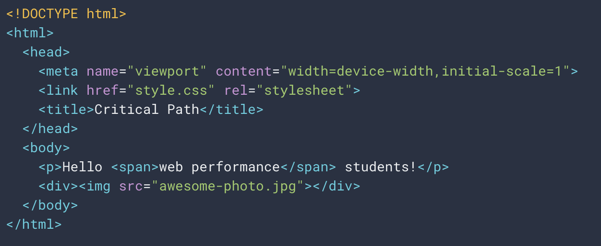
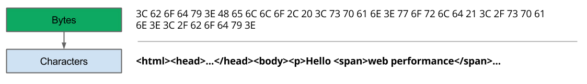
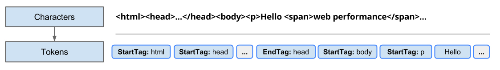
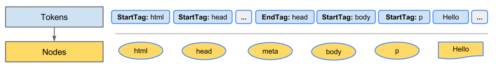
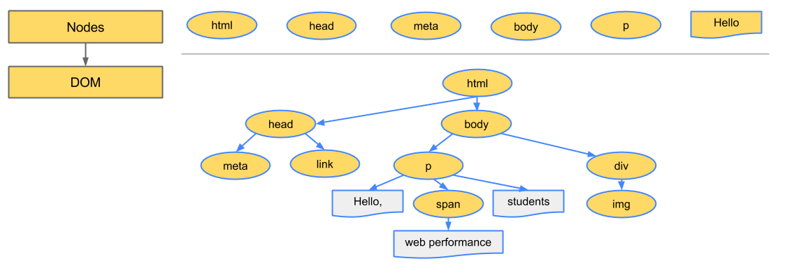

Hello! 👋
Welcome to Fayetteville.js 🤠The name's Joey 👺🙀

How The Browser Renders
🖥 🎨
"Apex is better than Fortnite"
- Harry S. Truman


"Delivering a fast web experience requires a lot of work from the browser, but almost all of it is hidden from us web developers. Even a basic web page with limited to no interactivity, we just write up some HTML and CSS, and we can open and view a pretty page in our web browser."
- Ilya Grigorik


Why would I want to learn this?
1. It's cool 🤷♂️
2. Performance tuning

The Critical Rendering Path™
Some Basic Markup
Document Object Model (DOM)

Process Overview

1. Conversion
2. Tokenization
3. Lexing
4. Dom Construction
What about looks? 💅
CSS Object Model (CSSOM)


Why is the CSSOM a tree? 🤔
Efficiently Determine Specificity!
- Apply general rules
- Recursivley apply more specific rules
- The rules "cascade down"
Disclaimer 🚨
Tree shown does not include
user agent styles
user agent styles
How does the DOM use the CSSOM?
Render Tree

Okay, cool!
So we just display it now, right???👩🎨 👨🎨

But...
- Where does stuff go?
- How big should stuff be?
- How do these things impact the position of other elements
- What about element wrapping?
- Height calculations?
- Nested calculations? (ex: half width of half width element)
Layout
(also know as "reflow")
Paint
(also known as "rasterization")Complexity varies by style
Compositing
(organizing the layers)
TL;DR
- Render Tree Construction
- Layout
- Paint
- Composite
Optimization!
Different CSS properties trigger different steps in the process.If a step is retriggered, all following steps must also be reprocessed!
BUT...
This actually varies from browser to browser 😅Thanks! 😃
Questions?